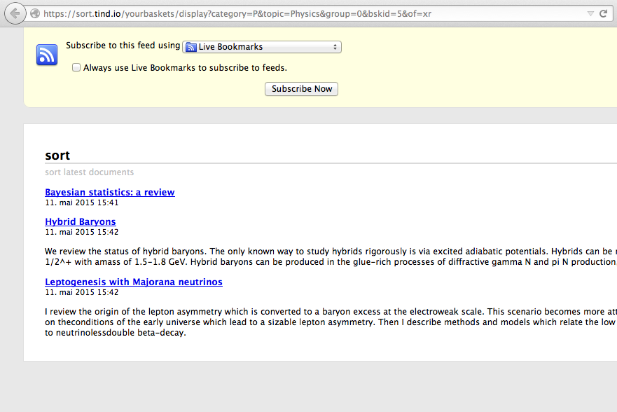

Create RSS feed¶
Two procedures for creating a RSS feed is described in this chapter; based on the search query itself, or the content added to your personal or public baskets.
1. Create a RSS feed for the content in your personal or public basket¶
Please check out Manage baskets for how to add content to a basket.
For both personal and public basket, a new RSS feed is created by selecting “RSS” in the menu for export formats.

Dependent of your browser either a text based site, or a html friendly site is displayed.
Firefox

Chrome

Copy the URL and past it into your favorite RSS reader.
Note
A RSS feed created from a private basket is only updated while the user is logged in. A public basket is necessary if the RSS feed will be shared. A public basket is also recommended if the user uses an external application (not a plug-in to the browser) which does not have the functionality to authenticate the user.
Note
The RSS feed in Invenio contains the following information as default: title, link, description, author, publication date, publisher and creation date/ date issued. Which information which is displayed in the reader is dependent of the available metadata and the reader itself.
2. Create a RSS feed from the search query¶
Invenio support RSS feeds based on the search query. Only items that matches the query will update the RSS reader. This gives the users the opportunity to only subscribe for content of interest by creating advances queries, example author:"ILO" AND subject:"child labour" .
A button to subscribe for a RSS feed is found at the bottom of every search results (brief view).

Note
Invenio support empty queries, which will display all items in the database. A limit of 25 items have been set as default for the RSS feed. Therefore, subscribing for a RSS feed based on a empty query will only display the last 25 items in the database. Such a subscription will notify the user of all new items in the database.